真实小米 24129PN74C，Android 16；系统字号 1.25。仅裁去顶部 160 像素系统区域，无缩放。旧 v1 缺陷与新 v2 回归分别标注。
v2 APK：e87fdbd8f195234e07bbe525cb3d7a1d639b47cc26119b514129d87e6748b8d1。详细用例、构建结果和覆盖限制见 验收记录。
e87fdbd8f195234e07bbe525cb3d7a1d639b47cc26119b514129d87e6748b8d1
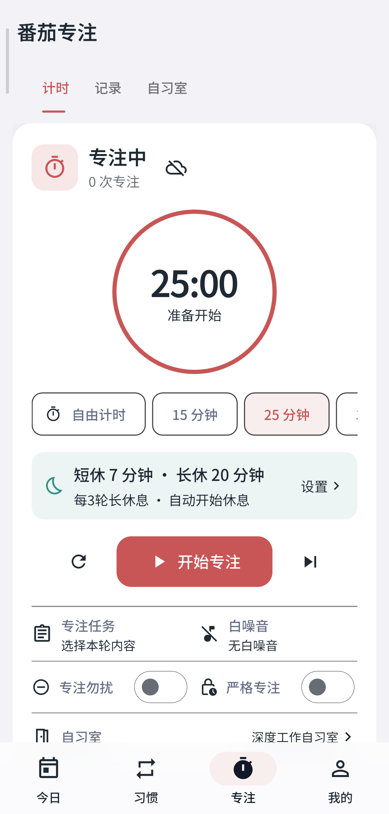
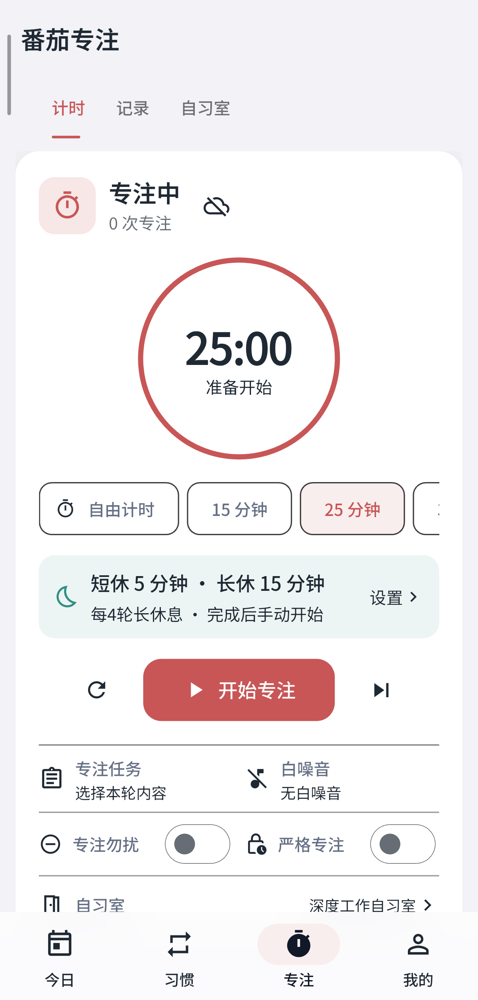
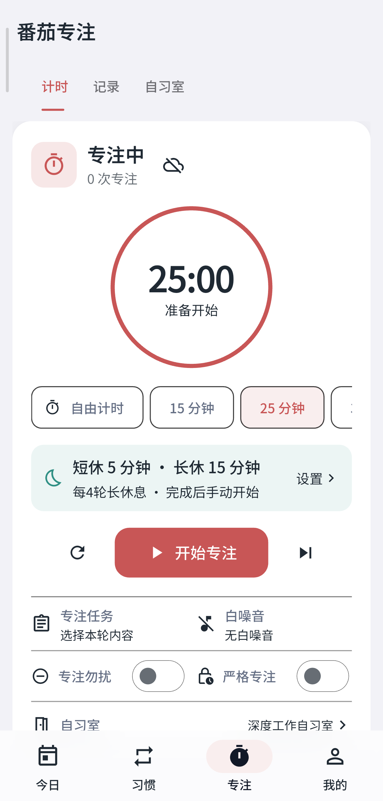
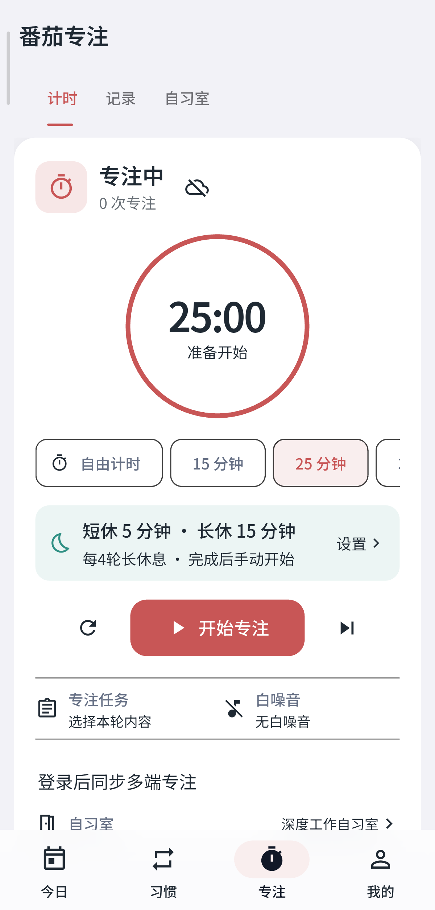
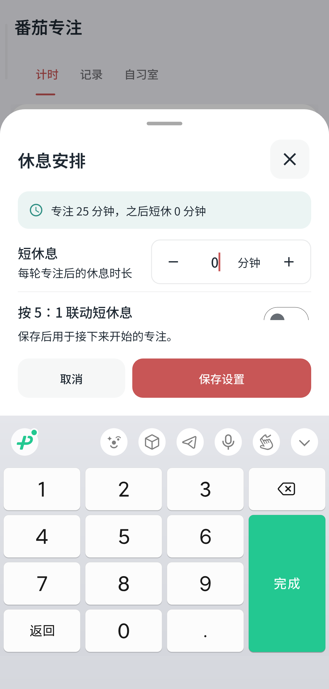
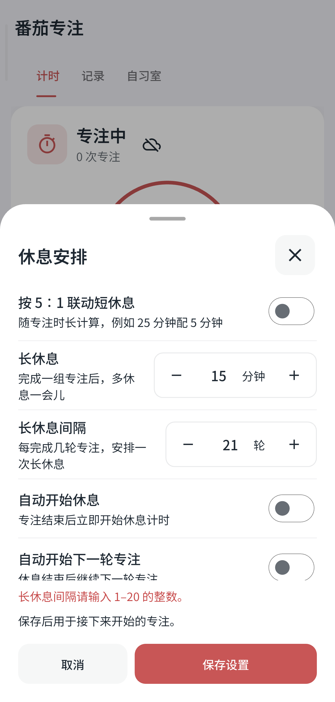
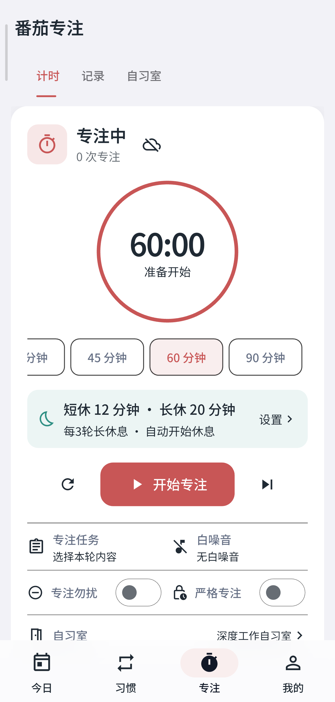
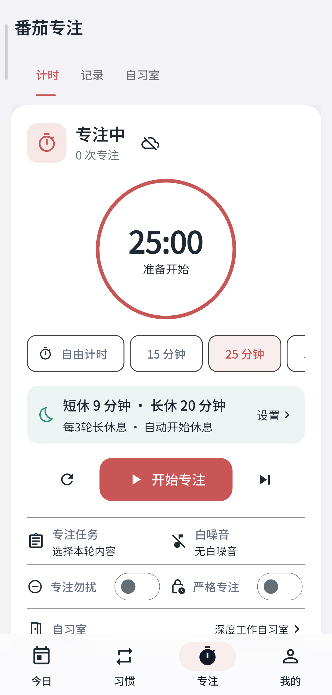
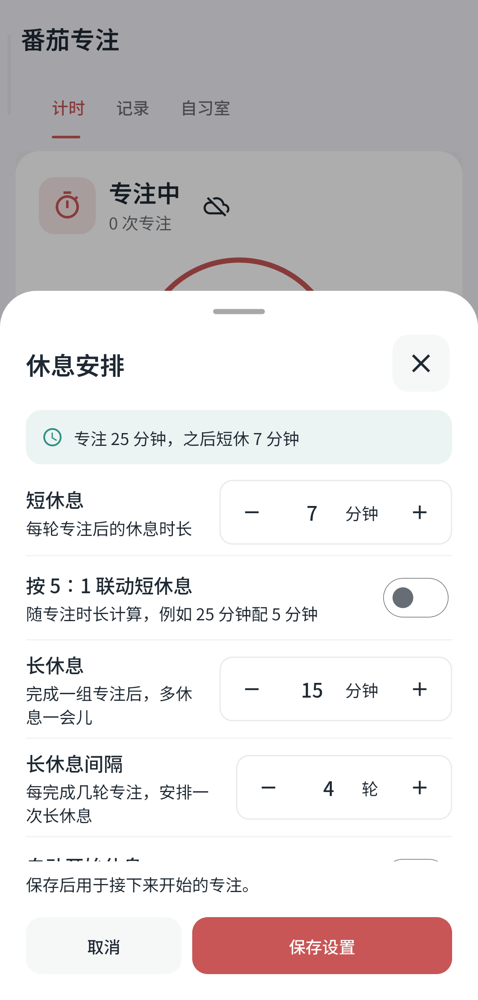
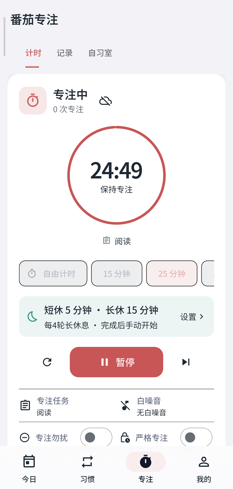
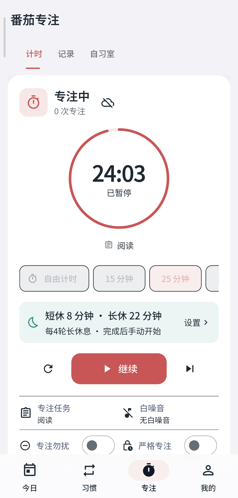
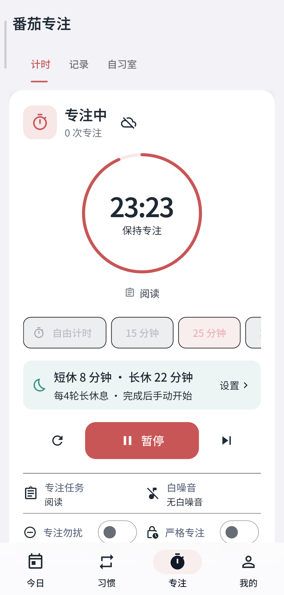
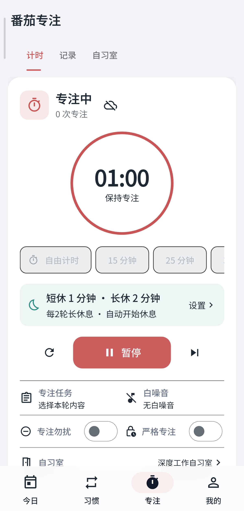
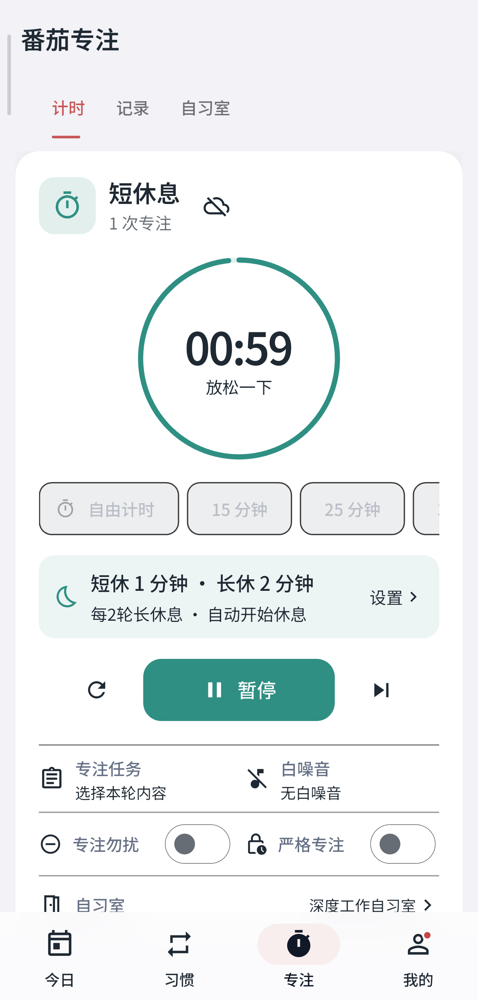
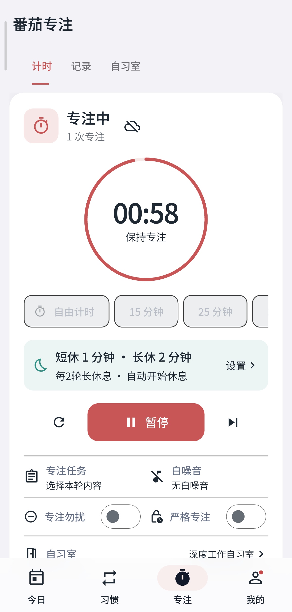
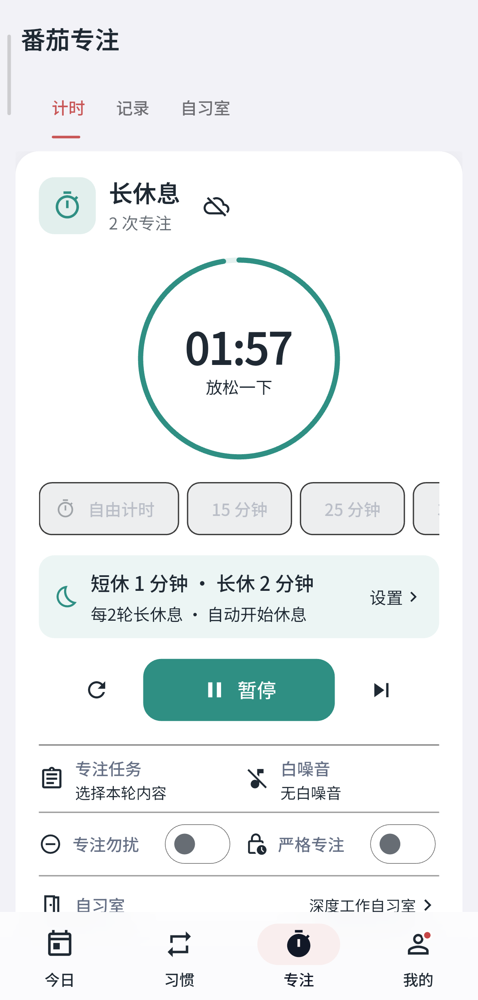
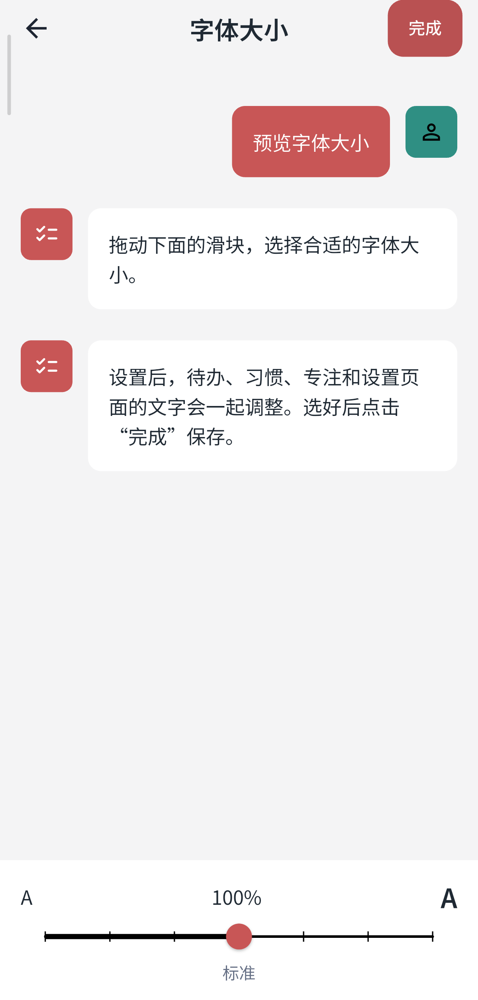
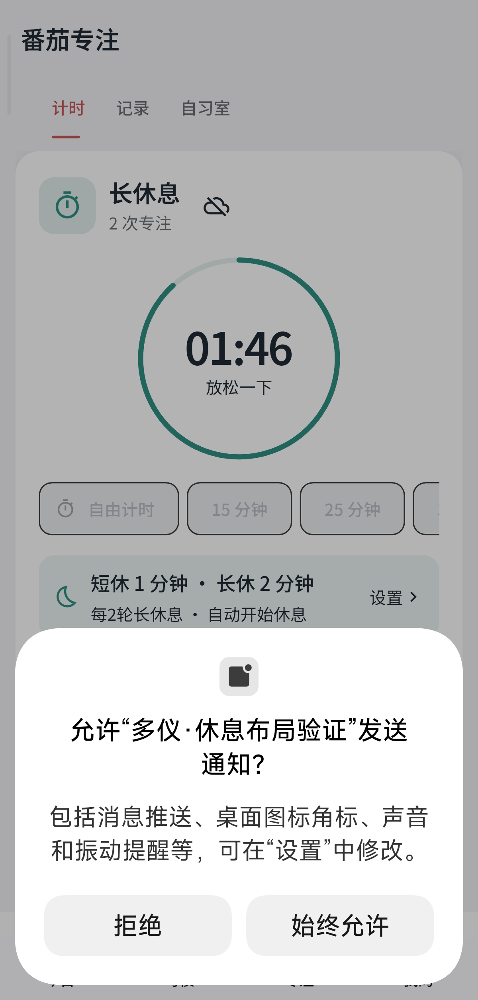